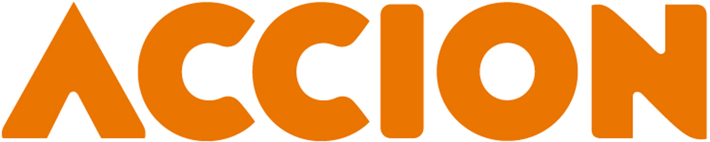
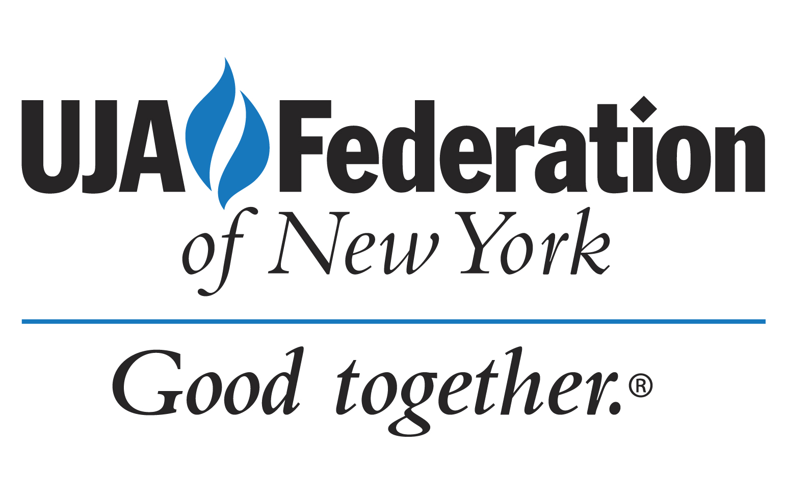

Accion East | Economic Empowerment
Accion empowers low- to moderate-income business owners through access to capital and financial education. With economic opportunity, these entrepreneurs - often minorities and women - can build assets, better provide for their families, create employment and strengthen their communities.
Bernard M. Baruch College, CUNY | Education
Inspired by Bernard M. Baruch's gift, the Baruch College Fund (BCF) was founded in 1969 as a nonprofit organization whose purpose is to promote the educational welfare of the students of Baruch College.

UJA - Federation of New York | Civil Rights and Social Action
Through UJA-Federation of New York, you care for people in need, inspire a passion for Jewish life and learning, and strengthen communities in New York, in Israel, and around the world.